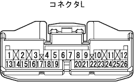
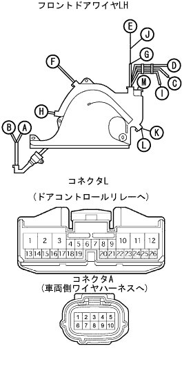

Power slide door parking brake switch circuit |
reference| Step 1 | Door control relay inspection |
Conduction inspection
Cut the connector B of the door control relay.
|  |
Use SST (Toyota Electrical Tester) to check the conductor between the door control relay vehicle side connector L15 ← → body ground.
| Terminal number | Measurement conditions | standard |
| L15 ← → Body Earth | When you step on the parking brake | There is an conductor |
| L15 ← → Body Earth | When the parking brake is returned | Without conduction |
|
| ||||
| NG | |
| Step 2 | Parking Brake Switch ASSY Single Inspection |
Use SST (Toyota Electrical Tester) to check the intake between the terminals when operating the shaft of the switch.
|
| ||||
| OK | |
| Step 3 | Front door wire LH inspection |
Conduction inspection
Cut the connector A and L of the front door wire LH LH.
|  |
Use SST (Toyota Electrical Tester) to check the conduction between the front door wire LH connector each terminal.
| Terminal number | standard |
| A10 ← → L15 | There is an conductor |
|
| ||||
| OK | ||
| ||